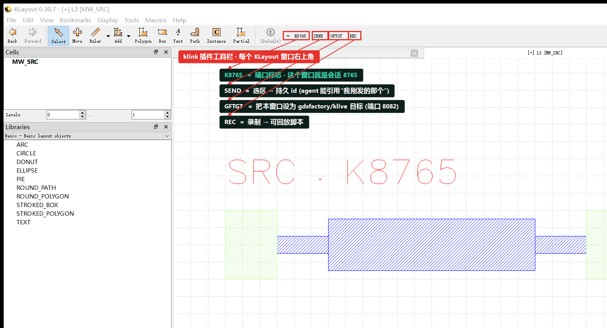
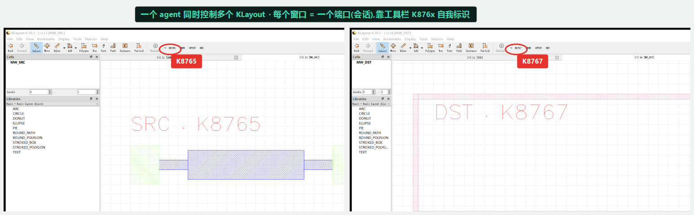
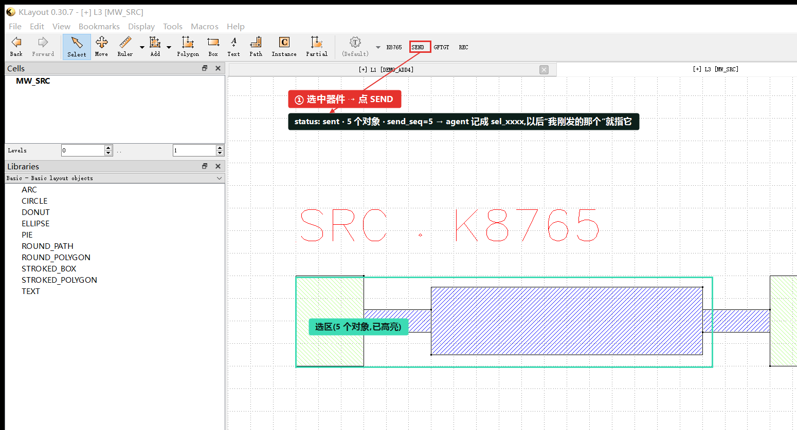
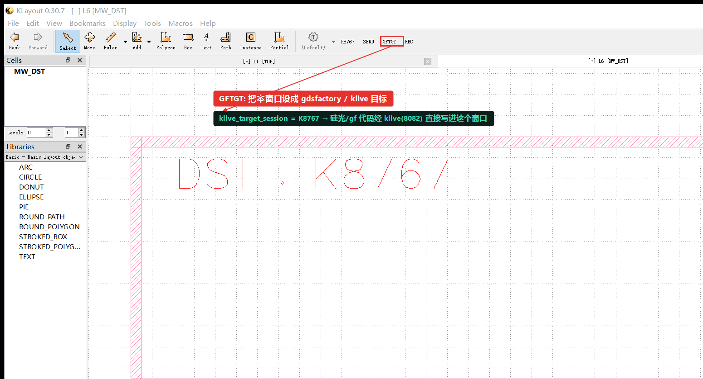
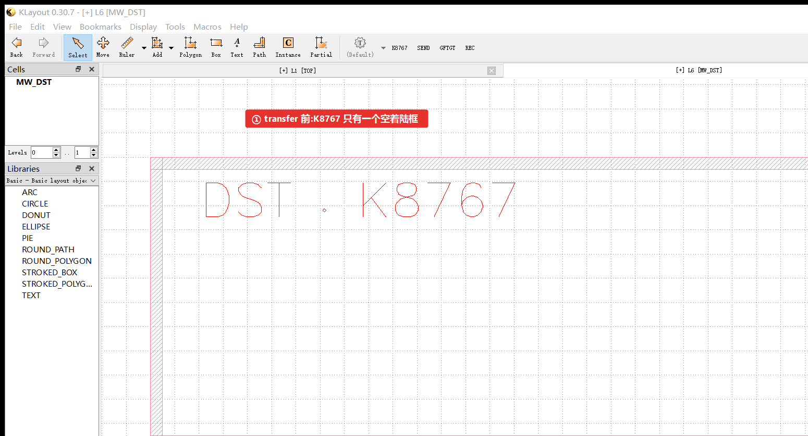
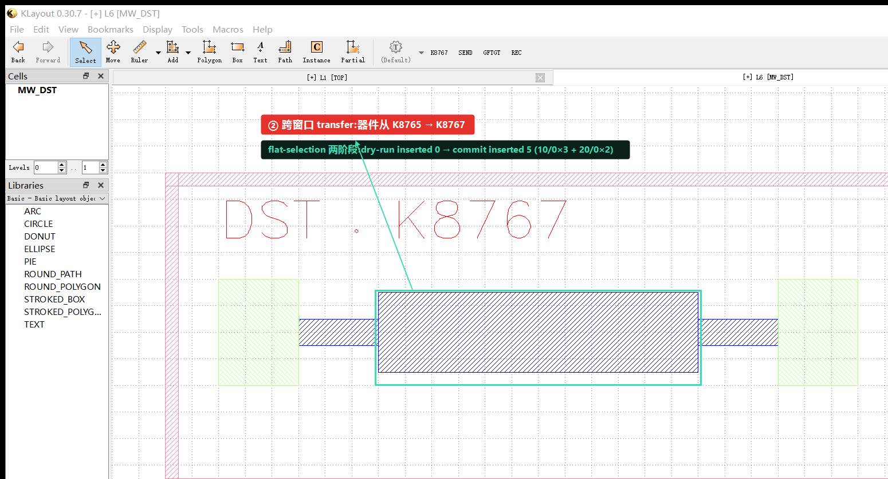

前置条件
- 至少两个 KLayout 窗口在运行，各自加载了 klink 插件、各占一个端口——默认从
8765起，第二个8766、第三个8767，以此类推。每个窗口右上角工具栏会显示自己的端口标志K876x。 - agent 一侧（Claude Code / Codex 等）通过 MCP 桥连接；调用时用
session参数指定要操作哪个窗口，不指定则默认第一个。 - 这一篇不需要任何工艺 PDK——演示用的是几个普通图层（
10/0金属、20/0pad、1/0边框、6/0文字）上的示意几何。
1klink 工具栏解剖
每个加载了 klink 插件的 KLayout 窗口，都会在标准工具栏右侧多出一小组控件。这一小组就是人和 agent 协作的入口：

K8765 是端口标志，说明这个窗口就是会话 8765；SEND 把当前选区发给 agent 变成持久 id；GFTGT 把本窗口设成 gdsfactory/klive 目标（端口 8082）；REC 录制成可回放脚本。窗口标题栏 [MW_SRC] 是当前显示的 cell 名。后面三步分别把 SEND、GFTGT 和跨窗口 transfer 走一遍——每一个既是人能点的按钮，也是 agent 能调的 typed 调用。
2一个 agent，多个窗口
klink 的会话模型很简单：每个 KLayout 窗口 = 一个端口 = 一个会话。一个 agent 通过 MCP 桥可以同时挂着多个窗口，靠端口区分该对谁下手。下面是同一个 agent 眼里的两个窗口——左边 K8765 放着源器件，右边 K8767 是一个空的着陆框：

K8765（源，含器件），右 K8767（目标，空框）。两个窗口靠工具栏 K876x 标志自我标识——agent 调用时传 session="8765" 或 "8767" 就能分别操作，互不干扰。因为窗口靠端口而不是靠"当前焦点"来寻址，agent 可以在一个窗口里读、在另一个窗口里写，不需要来回切前台——这正是接下来 SEND / GFTGT / transfer 三步的基础。
3SEND：把选区变成 agent 的持久记忆
人在 KLayout 里框选一块东西、点一下工具栏的 SEND，这块选区就被记进 agent 侧的会话记忆，拿到一个稳定 id。之后你说"我刚发的那个"、"这块区域"，agent 就能解析到确切的几何，而不用你再描述一遍坐标。agent 侧对应的 typed 调用是 selection.send_context：
# 人的做法：框选 → 点工具栏 SEND
# agent 的等价做法（这次演示实际调用的）：
client.selection_set_box("MW_SRC", [-12000, -2000, 12000, 2000]) # 选中整个器件（单位 dbu）
snd = client.call("selection.send_context", {"source": "tutorial_demo"})
# -> {"status": "sent", "count": 5, "send_seq": 5}
K8765 里选中器件（青框，5 个对象已高亮）→ SEND。返回 status: sent · count 5 · send_seq 5——这块选区现在成了 agent 记忆里一条持久条目（形如 sel_xxxx），后续对话里"我刚发的那个"就指它。send_seq 单调递增，SEND 会先落盘 journal 再广播，所以就算此刻没有监听者也不会丢。4GFTGT：把 gdsfactory / klive 流量导向某个窗口
多窗口时有个现实问题：你在 Python 里用 gdsfactory 生成一份版图，想让它落进哪一个 KLayout 窗口？klive 的兼容端口是固定的 8082，GFTGT 按钮就是用来把这条流量指到当前窗口——点一下，本窗口就成了 gdsfactory/klive 的目标，之后经 8082 推来的几何都落在这里。agent 侧对应 session.mark_klive_target：
# 人的做法：在想接收 gf 版图的窗口上点 GFTGT
# agent 的等价做法（这次演示实际调用的）：在 K8767 上执行
client.call("session.mark_klive_target", {})
# -> {"ok": True, "klive_target_session": "klayout-8767", ...}
K8767 上点 GFTGT：klive_target_session 被设成 klayout-8767。此后任何经 klive 兼容端口 8082 推来的 gdsfactory 版图，都会落进这个窗口，而不是默认的第一个。想换一个窗口接收，就在那个窗口上再点一次 GFTGT。5跨窗口 transfer：两阶段搬运几何
最后一步把几何真正从一个窗口搬到另一个。klink 的跨会话 transfer 是两阶段的——先在目标窗口 dry-run（只算不写、给你一份 review），确认无误再 commit 真正写入。这样搬运永远是"先验证后变更"，失败不留半成品。用的是 MCP 工具 klink.transfer_prepare（读源窗选区 → 打包 → 在目标窗口 dry-run）+ klink.transfer_commit（真正落盘）：
# 源窗口 K8765 里已经 SEND / 选中了那 5 个对象（见 Stage 3）
# 阶段一：prepare —— 读源选区、打包、在目标窗口 K8767 的 MW_DST 上 dry-run
prep = transfer_prepare(source_session="8765", target_session="8767",
target_cell="MW_DST", copy_mode="flat_selection")
# target_dry_run.inserted == 0 （只是演算，没写任何东西）
# 阶段二：commit —— 确认后真正写入
commit = transfer_commit(package_id=prep["package_id"])
# write.inserted == 5 （10/0 × 3 + 20/0 × 2）
K8767 的 MW_DST 里只有一个空着陆框。
K8765 落进了 K8767。flat-selection 两阶段：dry-run inserted 0 → commit inserted 5（10/0 × 3 + 20/0 × 2），逐层对得上 Stage 3 选中的那 5 个对象。源窗口 K8765 原封不动——transfer 是拷贝，不是剪切。验证，不是截图
和核心思路说的一样，截图是给人看的，真正的完成依据是结构化返回。这次演示三步各自的实际返回：
{
"send": {"status": "sent", "count": 5, "send_seq": 5},
"gftgt": {"ok": true, "klive_target_session": "klayout-8767"},
"transfer": {
"prepare_dry_run": {"cell": "MW_DST", "requested": 5, "inserted": 0, "by_layer": {"10/0": 3, "20/0": 2}},
"commit": {"cell": "MW_DST", "requested": 5, "inserted": 5, "by_layer": {"10/0": 3, "20/0": 2}}
}
}requested 与 commit.inserted 都是 5、by_layer 逐层一致——说明源窗口那 5 个对象一个不多一个不少地落进了目标窗口，且 dry-run 阶段 inserted=0 证明"先验证后变更"确实没有在确认前写任何东西。这些数字才是判断成没成的依据，图只是让人一眼看懂发生了什么。
下一步
把这套控制面用到你自己的多窗口流程里：一个窗口当"参考/源"、另一个当"工作区"，用 SEND 把源里的选区喂给 agent，用 transfer 两阶段搬过去；用 gdsfactory 生成版图时，先在目标窗口点 GFTGT 定向。这些能力的完整清单见功能特性 · 人 · agent 与实时 KLayout，深入的字段说明见工作流。想看 agent 真正把一句话变成版图 / DRC / LVS 的实战对话，去教程页顶部的实战对话案例。